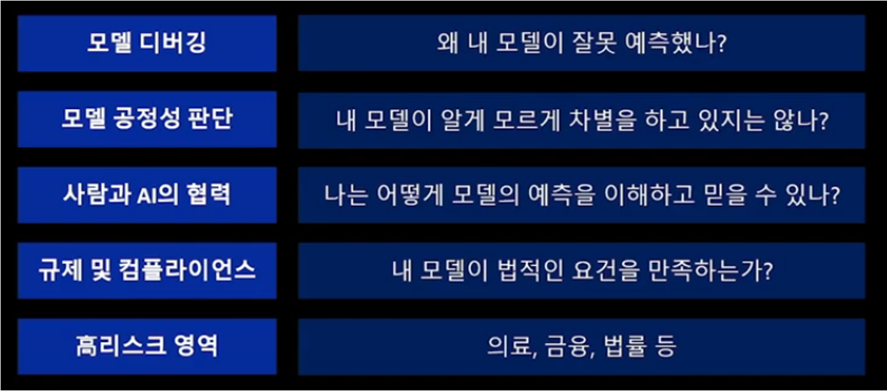
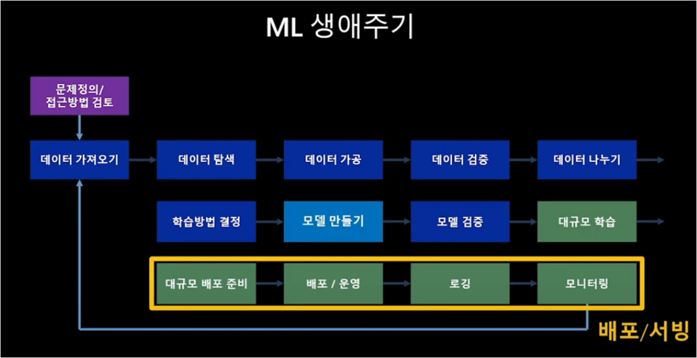

MLOps Lifecycle 3
모델의 검증
예측 성능
모델의 예측값이 실제값에 얼마나 가까운지
얼마나 잘 일반화(Generalized)되는지
DS가 관심을 두는 부분
처리 성능
모델이 예측값을 계산해내는데 소요되는 시간, 사용하는 컴퓨팅 자원
안정적으로 얻을 수 있는 추론 성능
SWE가 관심을 두는 부분
서비스가 얼마나 안정적으로 되고 있는지 파악할 수 있는 요소(처리 시간, 처리량, 실패 유형 등)
애저에서는 어플리케이션 인사이트 기능을 이용함. 코드에서 발생하는 모든 로그 정보가 한 곳에서 통합 관리됨
MLOps Lifecycle 3 : 모델 해석
모델 해석의 필요성

대부분은 Black Box Model이다.
정확도 만으로 모델의 성능을 평가할 수 없다.
모델이 예측을 잘하는지 객관적 평가, 성능지표가 필요하다
모델 해석 분류 기준
Intrinsic vs Post-hoc: 모델 자체로 해석 여부 가능한지, 아니라면 해석을 위한 새로운 모델링Model-specific vs Model-agnostic: 특정 모델에만 적용되는지Global vs Local: 데이터에 따른 모델의 범위
모델 해석 방법

MLOps Lifecycle 4 : 모델 배포 및 서빙
Model Serving이란 다른 애플리케이션에서 ML 모델을 사용할 수 있도록 모델을 배포하거나, 모델 API를 제공하는 것을 의미

모델 모니터링
서빙 단계에서는 모니터링의 기능을 제공하여 모델에 대한 성능을 주기적으로 확인해야 함
모델 성능 하락 원인
Data Drift: 데이터의 통계적 변형
Schema Drift: 데이터 스키마 변형
Data Skew: 데이터의 불균형
Concept Drift: 비즈니스 목적의 변형